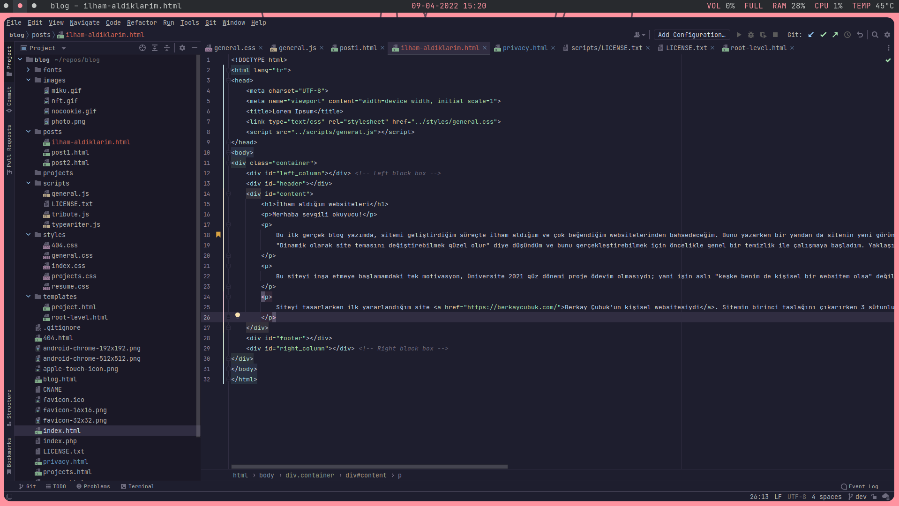

İlham aldığım websiteleri
fybalaban
9/4/2022
Merhaba sevgili okuyucu!
Bu ilk gerçek blog yazımda, sitemi geliştirdiğim süreçte ilham aldığım ve çok beğendiğim websitelerinden bahsedeceğim. Bunu yazarken bir yandan da sitenin yeni görünümü üzerinde çalışıyorum. "Dinamik olarak site temasını değiştirebilmek güzel olur" diye düşündüm ve bunu gerçekleştirebilmek için öncelikle genel bir temizlik ile çalışmaya başladım. Yaklaşık 12 saatin ardından 9 commit'lik bir merge yaparak birinci aşamayı tamamladım.
Bu siteyi inşa etmeye başlamamdaki tek motivasyon, üniversite 2021 güz dönemi proje ödevim olmasıydı; yani işin aslı "keşke benim de kişisel bir websitem olsa" değil. Fakat çabucak bitirilmesi gereken bir ödev olarak başladığım site giderek büyüdü ve artık severek güncellediğim bir yer haline geldi.
Siteyi tasarlarken ilk yararlandığım site Berkay Çubuk'un kişisel websitesiydi. Sitemin birinci taslağını çıkarırken 3 sütunlu yapıyı ondan esinlenerek tasarladım. Sitemin sağ ve sol sütunlarını siyah bırakıp, header ve footerı sabitleme fikrini de freecodecamp'in şu videosunun ilk 1 dakikasından aldım.
Şu anda proje oldukça büyüdü, soldaki proje dosya gezgini tüm dosyaları gösteremiyor bile. Henüz diğer projelerimi eklediğim sayfalar ve hiç blog paylaşımı olmaması da göz önünde bulundurulduğunda, ileride daha da uzayacağını düşünüyorum. Bu karmaşık içerikli websitesi ilhamını da Deven Blake'in sitesinden aldım.
Şimdi sırada Javascript kullanmak zorunda kaldığım sayfalar var:
- Bu sayfanın içeriğinin fikrini şu videodan aldım. Yaparken eğlendiğim bir proje oldu.
- Özel bir 404 sayfası tasarlama fikri siteyi kodlamaya başladığım andan itibaren aklımdaydı ancak gerçekten yapmam için aradan 3 ay geçmesi gerekti. 670589b kodlu commit ile ilk versiyonunu ekledim!
- Tüm sayfalarda çalışan ve footer ile header'ı yükleyen general.js: Dinamik olarak header ve footer'ı yükleyebilmek için başta JQuery kullanıyordum. Daha sonradan sitedeki her şeyin lokal olarak host edilebilir olmasını sağlamak için gerekli fonksiyonları da ben yazdım. Daha iyi bir çözüm bulana dek header ve footer'ı böyle yükleyeceğim :^)
Bu yazımın sonuna gelmiş bulunuyoruz. Okuduğun için teşekkür ederim!